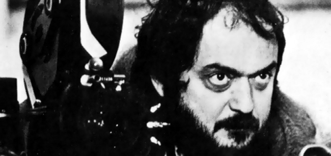

2001СтильФормыDOM: чтениеDOM: латиницаЗадача 1012ВикипедияIMDb
2001СтильФормыDOM: чтениеDOM: латиницаЗадача 1012ВикипедияIMDb
Биография
Детство и фотография
Кубрик родился в Нью-Йорке. В детстве ему подарили фотоаппарат, а в 17 лет он продал снимок в журнал Look и стал там фотографом.

- Свет важнее декораций.
- Кадр читается за секунду.
| Кадр | Название | Коротко | Ссылка |
|---|---|---|---|
| 1945 | Первая публикация в Look | Википедия |
Путь в кино
- Первые фильмы:
- «Страх и желание» (1953);
- «Поцелуй убийцы» (1955).
- Прорыв: «Ограбление» (1956).
 Ограбление |